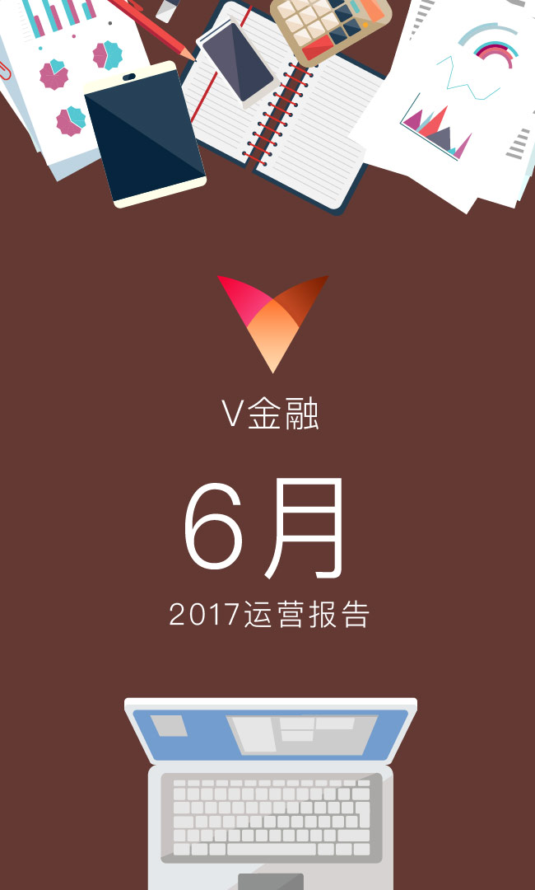

<!DOCTYPE html>
<html lang="en">
<head>
    <meta charset="utf-8">
    <title>运营月报</title>
    <meta name="viewport" content="width=device-width, initial-scale=1, minimum-scale=1, maximum-scale=1">

    <!-- Link Swiper's CSS -->
    <link rel="stylesheet" href="../../../wheel/swiper.min.css">
    <style>
        * {
            -webkit-transition-timing-function: ease-in-out;
            -moz-transition-timing-function: ease-in-out;
            -ms-transition-timing-function: ease-in-out;
            -o-transition-timing-function: ease-in-out;
            transition-timing-function: ease-in-out;
        }
        html, body {
            position: relative;
            height: 100%;
        }
        body {
            background: #eee;
            font-family: Helvetica Neue, Helvetica, Arial, sans-serif;
            font-size: 14px;
            color:#000;
            margin: 0;
            padding: 0;
        }
        .swiper-container {
            width: 100%;
            height: 100%;
            margin-left: auto;
            margin-right: auto;
        }
        .swiper-slide {
            text-align: center;
            font-size: 18px;
            background: #fff;

            /* Center slide text vertically */
            display: -webkit-box;
            display: -ms-flexbox;
            display: -webkit-flex;
            display: flex;
            -webkit-box-pack: center;
            -ms-flex-pack: center;
            -webkit-justify-content: center;
            justify-content: center;
            -webkit-box-align: center;
            -ms-flex-align: center;
            -webkit-align-items: center;
            align-items: center;
        }
        img{
            height:100% !important;
            width: 100%;
            margin: 0 auto;
        }
        img.special{
            width: 100%;
            height: 100%;
        }
        .u-arrow { position: fixed; bottom: 45px; left:50%; z-index: 150; width: 33px; height: 17.5px;
            -webkit-transform: translateX(-50%);
            -ms-transform: translateX(-50%);
            -o-transform: translateX(-50%);
            transform: translateX(-50%);}
        .u-arrow p {width: 33px; height: 17.5px;
            background-size: contain;
            position: absolute; top: 0; left: 0;
            -webkit-animation: start 2s infinite ease-in-out;
            -moz-animation: start 2s infinite ease-in-out;
            animation: start 2s infinite ease-in-out;
        }
        .css_sprite01 { background-image:url(../../../wheel/images/css_sprite01.png)!important;  background-repeat: no-repeat!important; }

        /*箭头指示引导*/
        @-webkit-keyframes start {
            0%,30% {opacity: 0;-webkit-transform: translate(0,10px);}
            60% {opacity: 1;-webkit-transform: translate(0,0);}
            100% {opacity: 0;-webkit-transform: translate(0,-8px);}
        }
        @-moz-keyframes start {
            0%,30% {opacity: 0;-moz-transform: translate(0,10px);}
            60% {opacity: 1;-moz-transform: translate(0,0);}
            100% {opacity: 0;-moz-transform: translate(0,-8px);}
        }
        @keyframes start {
            0%,30% {opacity: 0;transform: translate(0,10px);}
            60% {opacity: 1;transform: translate(0,0);}
            100% {opacity: 0;transform: translate(0,-8px);}
        }
    </style>
</head>
<body style="background:#fcfaf5">
<div class="swiper-container" style="background:#fcfaf5">
    <div class="swiper-wrapper">
        <!--<div class="swiper-slide"></div>-->
        <!--<div class="swiper-slide"></div>-->
        <!--<div class="swiper-slide"></div>-->
        <!--<div class="swiper-slide"></div>-->
        <!--<div class="swiper-slide"></div>-->
        <!--<div class="swiper-slide"></div>-->
        <!--<div class="swiper-slide"></div>-->
        <!--<div class="swiper-slide"></div>-->
        <!--<div class="swiper-slide"></div>-->
        <!--<div class="swiper-slide"></div>-->
        <!--<div class="swiper-slide"></div>-->
        <!--<div class="swiper-slide"></div>-->
        <!--<div class="swiper-slide"></div>-->
    </div>
    <section class="u-arrow">
        <p class="css_sprite01"></p>
    </section>
</div>

<script src="../../../wheel/swiper.min.js"></script>
<script src="../../../js/lib/jquery-2.1.3.min.js?v=9.0.0"></script>
<script src="../../../js/lib/doT.min.js?v=9.0.0"></script>
<script src="../../../js/setting.js?v=9.0.0"></script>
<script src="../../../js/common3.0.js?v=9.0.0"></script>
<script src="https://res.wx.qq.com/open/js/jweixin-1.0.0.js?v=9.0.0"></script>
<script>
    $(function() {
        document.addEventListener('WeixinJSBridgeReady', function onBridgeReady() {
            // 通过下面这个API隐藏右上角按钮
            WeixinJSBridge.call('hideOptionMenu');
        });
        var param = Common.getParam();
        var mouth = param.mouth;
        var pack = param.pack;
        var countNumber = parseInt(param.countNumber);
        var format = param.format;

        var _html = '';
        for(var i = 0; i < countNumber; i++) {
            _html = _html + '<div class="swiper-slide"></div>';
        }

        $('.swiper-wrapper').html(_html);

        var swiper = new Swiper('.swiper-container', {
            pagination: '.swiper-pagination',
            direction: 'vertical',
            slidesPerView: 1,
            paginationClickable: true,
            spaceBetween: 30,
            mousewheelControl: true
        });

        var url = window.location.href.split("#")[0];//获取地址
        var imgurl = 'http://106.15.44.101/group1/M00/00/17/ag8sZVolGGOANjUcAAB9_Mtu1vg556.png';//获取图片的logo
        var info = {
            url:url
        };
        var shareId = "888";
        var one = {
            title: '2017年' + mouth + '月 V金融月报',
            desc: 'V金融感谢您的一路支持与信任',
            link: url,
            imgUrl: imgurl
        };

        var all = {
            title: '2017年' + mouth + '月 V金融月报',
            desc: 'V金融感谢您的一路支持与信任',
            link: url,
            imgUrl: imgurl
        };

        //获取分享信息
        $.ajax({
            url: 'https://web.wdclc.cn/getShare.p2p?shareId='+shareId,
            type: 'GET',
            dataType: 'json',
            async: true
        }).done(function(res) {
            if (res.code == 1) {
                one.title = '2017年' + mouth + '月 V金融月报';
                one.desc= 'V金融感谢您的一路支持与信任';
                all.title = '2017年' + mouth + '月 V金融月报';
                all.desc= 'V金融感谢您的一路支持与信任';
                one.imgUrl = imgurl;
                all.imgUrl = imgurl;
//                one.link =  'https://static.wdclc.cn/wx/wheel/mousewheel.html';
//                all.link =  'https://static.wdclc.cn/wx/wheel/mousewheel.html';
                one.link = Setting.staticRoot + '/pages/active/mouths/mousewheel.html?mouth=' + mouth + '&pack=' + pack + '&countNumber=' + countNumber + '&format=' + format;
                all.link = Setting.staticRoot + '/pages/active/mouths/mousewheel.html?mouth=' + mouth + '&pack=' + pack + '&countNumber=' + countNumber + '&format=' + format;
                wxshare();
            } else {
                alert(res.message);
                return false;
            }
        }).fail(function() {
            alert('网络链接失败，请刷新重试！');
            return false;
        });
        function wxshare(){

            $.ajax({
                url: 'https://web.wdclc.cn/wx/jsInfo.p2p',
                type: 'GET',
                dataType: 'json',
                data: {"param": JSON.stringify(info)},
                async: true
            }).done(function(res) {

                if (res.code == 1) {
                    var data = res;

                    wx.config({
                        debug: false,
                        appId: data.appId,
                        timestamp: data.timestamp,
                        nonceStr: data.nonceStr,
                        signature: data.signature,
                        jsApiList: [
                            // 所有要调用的 API 都要加到这个列表中
                            'checkJsApi',
                            'onMenuShareTimeline',
                            'onMenuShareAppMessage',
                            'onMenuShareQQ',
                            'onMenuShareWeibo',
                            'hideMenuItems',
                            'showMenuItems',
                            'hideAllNonBaseMenuItem',
                            'showAllNonBaseMenuItem',
                            'getNetworkType',
                            'openLocation',
                            'getLocation',
                            'hideOptionMenu',
                            'showOptionMenu',
                            'closeWindow'
                        ]
                    });

                    wx.ready(function () {
                        wx.onMenuShareAppMessage(one);
                        wx.onMenuShareTimeline(all);
                        wx.onMenuShareQQ(one);
                        wx.onMenuShareWeibo(one);
                    });

                }else{
                    /*alert(res.code);*/
                }

            }).fail(function() {
                alert('网络链接失败，请刷新重试！');
                //return false;
            });
        }


    });


</script>
</body>
</html>